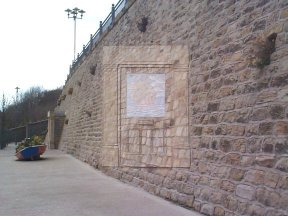

This superbly-designed oblique anamophosis is one of the sculptures in the St Peter's Riverside Sculpture Project, which runs for a kilometre or so along the banks of the River Wear.
(Find out more at the Art on the Riverside web site: Passing Through - other artworks in Sunderland - Colin Wilbourne biography)
|  | |
|
To see the undistorted view, you should ideally sit |